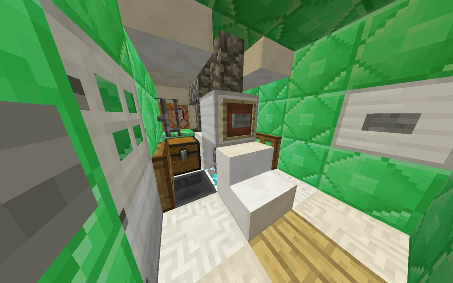

Project Chr0NOS
−594, 65, 1649
A SOLAR project leading to fragments of other eras. Its capsule stands in the lower levels of the Museum of Natural History.
Where to begin
The Chr0NOS capsule stands in the archives beneath the Museum of Natural History, near −596, 37, 1634. The SOLAR engineering manual is at −594, 37, 1634. The machine is attributed to researcher CRN065 and does not transport visitors into an entire era: it creates altered fragments of spacetime, each with its own boundaries. The four TIMELOGs record CRN065’s experience at four successive locations.
Spoiler warningReveal spoiler



Spoiler warningReveal solution and ending
Preparing the capsule
Collect the initial pair at −594, 53, 1650. With the door closed, use the button farthest from it to flush the fuel lines. Insert one core into each engine intake and activate the central console. The manual says the sequence locks once the jump begins. TIMELOG2 reiterates that flushing must happen before inserting the pair.
The two successful jumps
- 1089, a medieval version of Broville. TIMELOG1 is at −1445, 29, 1382. CRN065 hid both the machine and the cores, comparing the search to a Zelda puzzle. The pair is at −1405, 29, 1355 and −1407, 29, 1365.
- 1909, a Victorian version of Broville. TIMELOG2 is at −2529, 11, 2387. CRN065 says he posed as a redstone power engineer and used that knowledge to prepare harder hiding places. Look at −2498, 9, 2398 and −2466, 6, 2397.
The trench war
The third destination has a devastated appearance, described as post-apocalyptic in community accounts, but the documents place it in a wartime setting. TIMELOG3, at −2159, 21, 2771, records a failed jump with an unknown date. Diary 1925, at −2147, 17, 2865, contains entries from 1924 and 1925. The diary changes hands between sides in the war and records the discovery of an orange rod. CRN065 claims the conflict was an internal revolt and the anti-imperialists sought help from the Netherspawn. He accuses SOLAR of concealing this history. The cores are at −2144, 12, 2803 and −2118, 23, 2848.
The camp and the return
The last fragment shows the population under the czar’s oppression, before the Broviet Union. TIMELOG4, at −2243, 20, 1632, classifies the stop as failed and the destination as restricted. CRN065 intends to keep the cores. In the letter player..., at −2354, 9, 1513, he presents himself as one of the camp’s victims and describes repression against the regime’s own inhabitants. The community account identifies a body at this destination as the machine’s creator, killed under the czar’s regime; the letter documents his status as a victim without itself clarifying the exact circumstances of his death. He asks the visitor to return before the guards destroy the place. Collect the last pair beside the letter and return to the console near −2244, 18, 1633 to get back to the museum.
Original documents
Read the in-world texts behind this article. Expand a title to read its full transcription; some texts reveal clues and endings.
Read original document — Project Chr0NOSSOLAR Corp. · 8 pages · Spoilers
Page 1
Page 2
Page 3
Page 4
Page 5
Page 6
Page 7
Page 8
Book recorded at -594 37 1634. Source: SPOILER_bookOutput.txt. Original spelling retained.
Read original document — TIMELOG1CRN065 · 2 pages · Spoilers
Page 1
Page 2
Book recorded at -1445 29 1382. Source: SPOILER_bookOutput.txt. Original spelling retained.
Read original document — TIMELOG2CRN065 · 3 pages · Spoilers
Page 1
Page 2
Page 3
Book recorded at -2529 11 2387. Source: SPOILER_bookOutput.txt. Original spelling retained.
Read original document — TIMELOG3CRN065 · 5 pages · Spoilers
Page 1
Page 2
Page 3
Page 4
Page 5
Book recorded at -2159 21 2771. Source: SPOILER_bookOutput.txt. Original spelling retained.
Read original document — TIMELOG4CRN065 · 2 pages · Spoilers
Page 1
Page 2
Book recorded at -2243 20 1632. Source: SPOILER_bookOutput.txt. Original spelling retained.
Read original document — player...CRN065 · 8 pages · Spoilers
Page 1
Page 2
Page 3
Page 4
Page 5
Page 6
Page 7
Page 8
Book recorded at -2354 9 1513. Source: SPOILER_bookOutput.txt. Original spelling retained.
Read original document — Diary 1925Brovillian Imperial Army · 11 pages · Spoilers
Page 1
Page 2
Page 3
Page 4
Page 5
Page 6
Page 7
Page 8
Page 9
Page 10
Page 11
Book recorded at -2147 17 2865. Source: SPOILER_bookOutput.txt. Original spelling retained.
See also
Sources and references
- v11.4.4 maps, signs, books and items World records
- The Time Machine · Broville Wiki Community archive
- Project Chr0NOS — SOLAR Corp. World book
- TIMELOG1–4 and player... — CRN065 World book
- Diary 1925 — Brovillian Imperial Army World book
- Broville Document Atlas · Fuel cores and return journey Project inventory
Text adapted and expanded from The Time Machine (contributors and history, revision 5143). Adapted text is available under CC BY-SA 3.0.